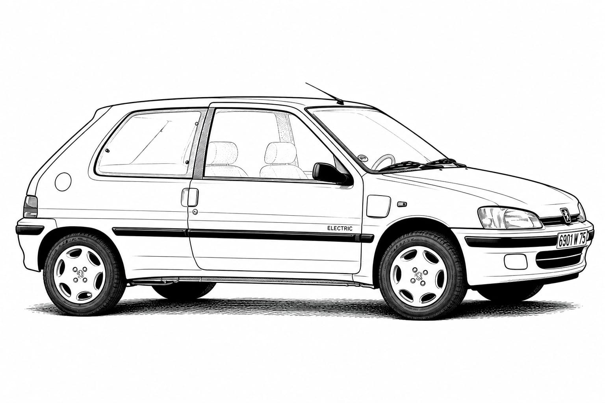

El coche que me enseñó la libertad
ML- Entre el instituto, las primeras salidas y un coche familiar que terminó marcando toda una etapa.21 mayo 2026 | 17:00 pm

Corría el año 2000. No era un coche nuevo ni especialmente moderno, pero para él significaba el inicio de una etapa completamente distinta. Era un coche familiar, de esos que ya forman parte de la casa, y terminó convirtiéndose en el compañero perfecto de sus primeros años al volante.
Con 18 años recién cumplidos y después de repetir segundo de bachillerato, había algo que seguía en marcha: la autoescuela ya estaba pagada. En diciembre de aquel año consiguió sacar el carnet y, por fin, podía conducir el coche hasta el instituto.
Era un coche sencillo, sin electrónica ni ayudas modernas, pero precisamente ahí estaba parte de su encanto. Tenía incluso starter manual y, en los días fríos, tendía a calarse, obligándolo a aprender a base de paciencia y experiencia. Cada pequeño problema terminaba convirtiéndose en una lección.
Más allá de conducir, aquel coche representaba algo mucho más importante: libertad. Las primeras salidas con amigos, la sensación de llevar gente contigo por primera vez y descubrir la carretera desde otra perspectiva quedaron grabadas para siempre en su memoria.
No era el coche perfecto, pero sí el indicado para aquella época. Y aunque han pasado muchos años, todavía guarda con cariño todos los recuerdos vividos junto a él.

Ficha técnica — Peugeot 106
Motor: 4 cilindros en línea, gasolina
Cilindrada: 1.124 cc
Potencia: 60 CV a 5.500 rpm
Torque: 94 Nm a 3.000 rpm
Transmisión: Manual de 5 velocidades
Tracción: Delantera
Sistema de frenos: Discos delanteros y tambores traseros
Suspensión delantera: Independiente tipo McPherson
Peso: 815 kg
Capacidad del tanque: 45 litros
Velocidad máxima: 160 km/h